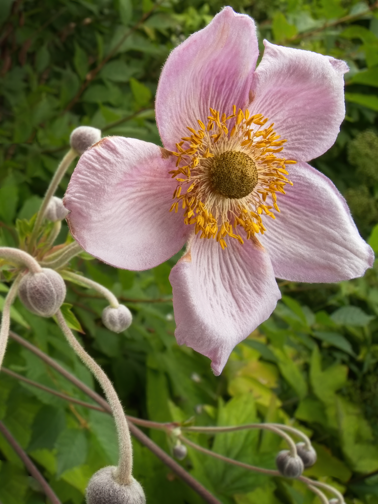

В белоснежном платье, как снежинка,
То ли в гости, то ли в отчий дом,
Шла девчонка вьющейся тропинкой
И несла букет живых цветов.
Стройная, как тополь серебристый,
Весела, как звонкий ручеек,
Что-то нежно ей шептали листья,
Улыбался каждый лепесток.
Гладили кудрявую головку
Солнышка волшебные лучи.
А она, счастливая девчонка,
Целовала розы лепестки.
И в глазах – лучащихся росинках –
Полыхала цветью неба синь,
И вот-вот, казалось, что пушинкой
Вдруг взлетит над шелестом осин.
Шла и пела голосом счастливым,
Вторила ей музыка весны,
И кругом светлее становилось
От сверкавшей платья белизны.
Что-то замаячило в сторонке,
И, жестоко брошенной рукой,
К платью белоснежному девчонки
Вдруг прилип с травою грязный ком.
Словно ничего не понимая,
Девочка рассматривала грязь,
И мальчишка, руки потирая,
Нагло улыбался, щуря глаз.
Не всплакнула, не назвала хамом
Гордого виновника в ответ,
А с улыбкой светлой хулигану
Бросила душистый свой букет.
И мотнув короткой рыжей стрижкой
(Сердце есть и у озорника),
Убежал пристыженный мальчишка
С пересохшей грязью на руках.
Если злые люди в вашей жизни
Вдруг оставят грязные следы,
Вы подобно девочке-снежинке
Бросьте в них прощения цветы.
Цветы прощения




Цветы прекраснее слов!